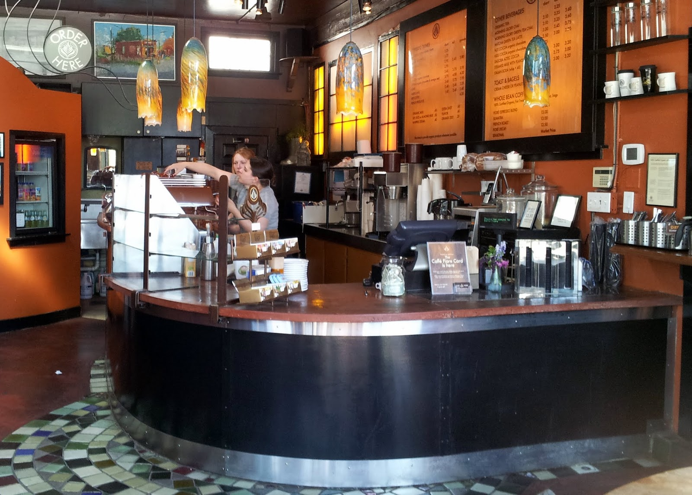

ABOUT THE CAFE
A coffeehouse, coffee shop, or café is an establishment that primarily serves coffee of various types, notably espresso, latte, and cappuccino. Some coffeehouses may serve cold drinks, such as iced coffee and iced tea, as well as other non-caffeinated beverages. In continental Europe, cafés serve alcoholic drinks. A coffeehouse may also serve food, such as light snacks, sandwiches, muffins, fruit, or pastries. Coffeehouses range from owner-operated small businesses to large multinational corporations. Some coffeehouse chains operate on a franchise business model, with numerous branches across various countries around the world.
"The first coffeehouses in the Islamic world, qahveh khaneh (Persian for coffee house), appeared in Damascus. These Ottoman coffeehouses also appeared in Mecca, in the Arabian Peninsula in the 15th century, then spread to the Ottoman Empire's capital of Istanbul in the 16th century. Coffeehouses became popular meeting places where people gathered to drink coffee, have conversations, play board games such as chess and backgammon, listen to stories and music, and discuss news and politics. They became known as "schools of wisdom" for the type of clientele they attracted, and their free and frank discourse."
Opening hours:Everyday from 6am to 5pm.
Address:15 Adr street, 5015, NY.